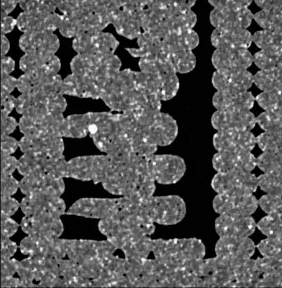

01 / Master's Thesis
Automated Micro-CT Image Segmentation and Void Analysis
York University & NYU Tandon
- Challenge: Destructive testing of composite materials creates waste and permanently damages high-value parts.
- Impact: Automated inspection reduces manual effort and supports scalable defect analysis for additive manufacturing.